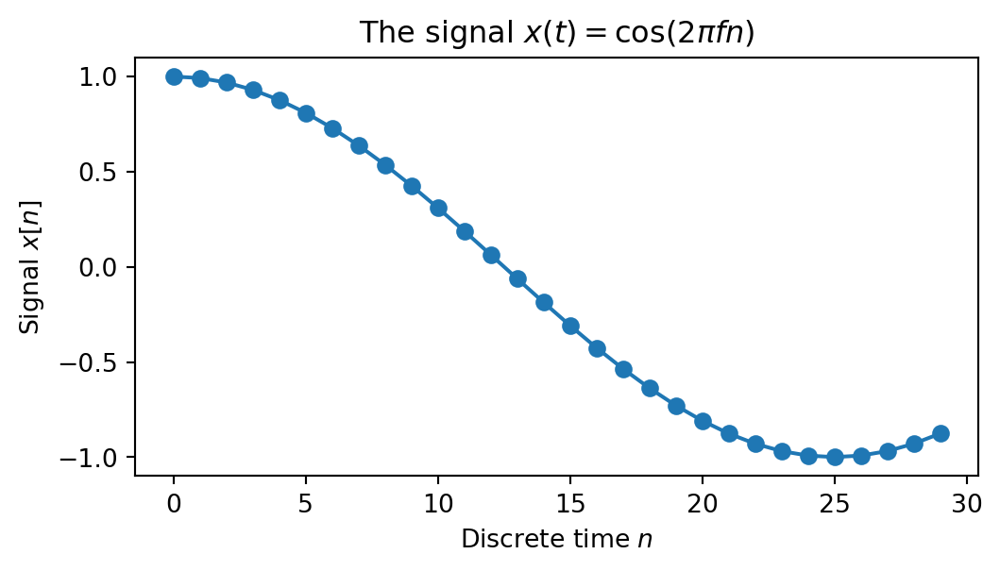
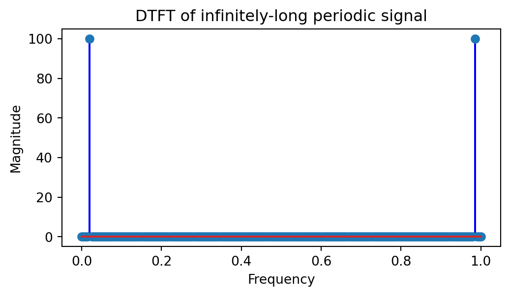
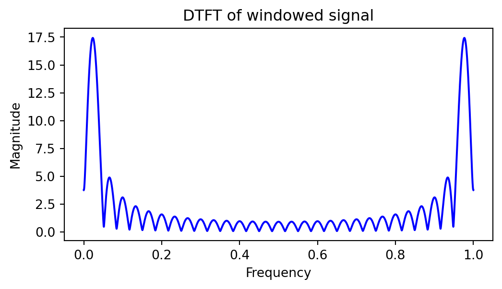
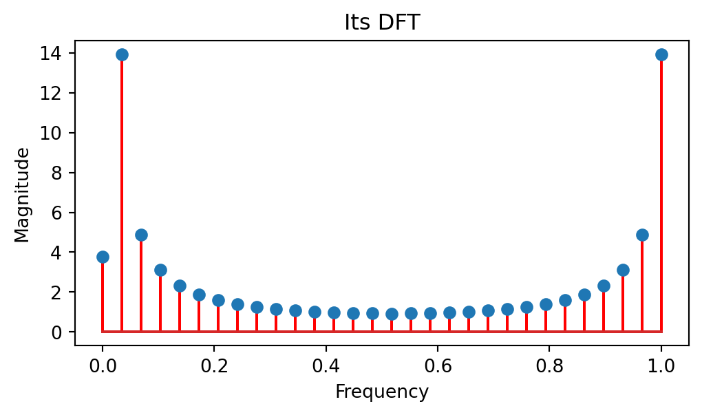
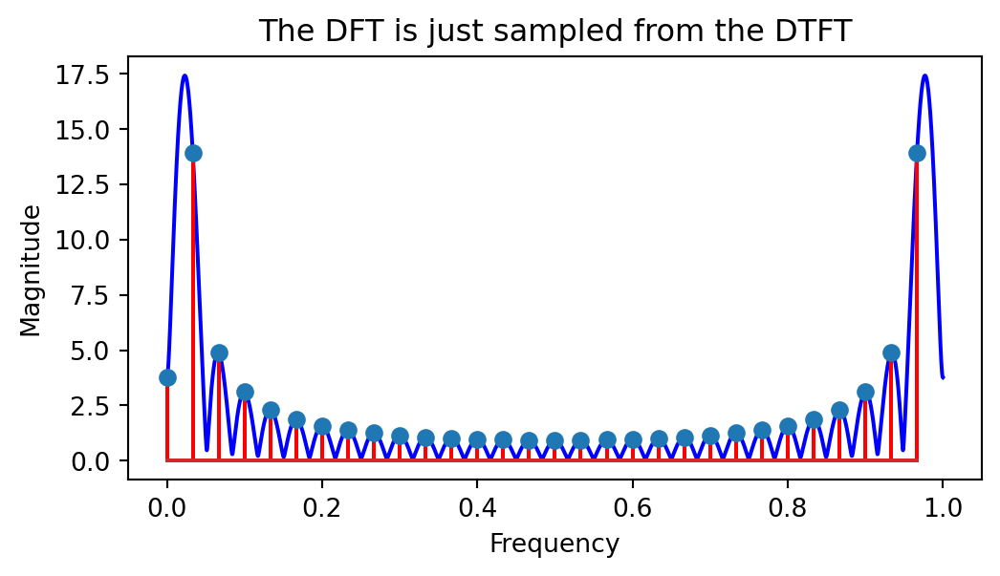
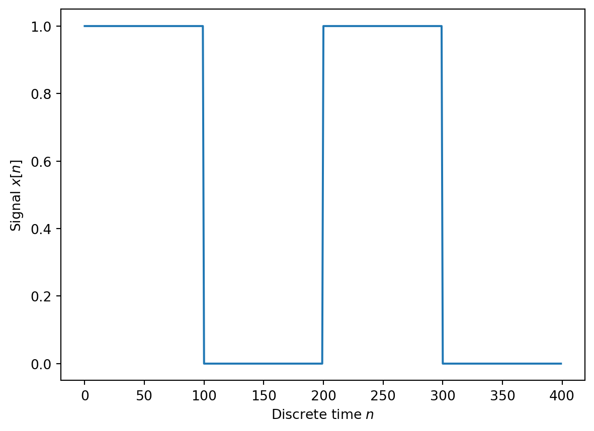
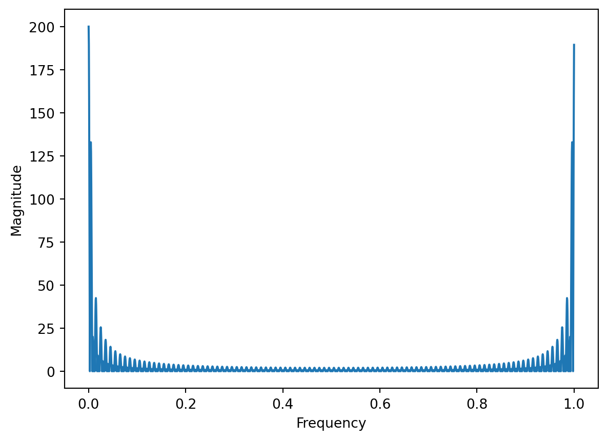

import numpy as np
import matplotlib.pyplot as plt
fft = np.fft.fft
fmin, fmax = 0, 1
#fft = lambda *args: np.fft.fftshift(np.fft.fft(args))
#fmin, fmax = -0.5, 0.52 DTFT and DFT
2.1 Example: a sinusoidal signal
Consider a cosine signal: \[x(t) = \cos(2 \pi f n)\] with \(f = 0.01\)
This is how the signal looks like:
# Create the signal
f = 0.02
N = 30
#fmax = fmax * (N-10)/N
n = np.arange(N)
x = np.cos(2*np.pi*f*n)
# Plot the signal
plt.figure(figsize=(6, 3))
plt.plot(x, '-o')
plt.title('The signal $x(t) = \cos(2 \pi f n)$')
plt.xlabel('Discrete time $n$')
plt.ylabel('Signal $x[n]$')
plt.show()
Now let’s compute the Discrete-Time Fourier transform. This assumes that the signal is infinitely long.
If the cosine signal would be infinitely long, the DTFT contains only two Dirac impulses at the corresponding frequency.
# Regenerate the signal so that it fits in one period
period = 10000*f
ninf = np.arange(period)
xinf = np.cos(2*np.pi*f*ninf)
# Compute the DTFT
Sinf = fft(xinf)
# Create the frequency axis
freqinf = np.linspace(fmin, fmax, len(Sinf))
# Plot the magnitude of the DTFT
plt.figure(figsize=(6, 3))
plt.title('DTFT of infinitely-long periodic signal')
plt.stem(freqinf, np.abs(Sinf), linefmt='b')
plt.xlabel('Frequency')
plt.ylabel('Magnitude')
plt.show()
If the signal is assumed to be only the segment we defined, and is surrounded by infinitely-long zeros, i.e. a truncated cosine, then the spectrum is convoluted with the spectrum of a rectangular window, and the DTFT looks as follows:
# Compute the DTFT
FFT_points = 10000*n.size
S1 = fft(x, FFT_points)
# Create the frequency axis
freq1 = np.linspace(fmin, fmax, len(S1))
# Plot the magnitude of the DTFT
plt.figure(figsize=(6, 3))
plt.title('DTFT of windowed signal')
plt.plot(freq1, np.abs(S1), 'b')
#plt.stem(freqinf, np.abs(Sinf), 'b')
plt.xlabel('Frequency')
plt.ylabel('Magnitude')
plt.show()
When computing the Discrete Fourier Transform (DFT), this assumes that the given piece of the signal is would be repeated periodically. The DFT is not continous, it is discrete.
# Compute the DFT
S2 = fft(x)
# Create the frequency axis
freq2 = np.linspace(fmin, fmax, len(S2))
#freq2 = np.fft.fftfreq(x.size)
# Plot the magnitude of the DTFT
plt.figure(figsize=(6, 3))
plt.title('Its DFT')
plt.stem(freq2, np.abs(S2), linefmt='ro')
plt.xlabel('Frequency')
plt.ylabel('Magnitude')
plt.show()
The DFT is just sampled from the DTFT:
# Plot the DTFT and DFT overlaid
freq2 = np.linspace(fmin, fmax, len(S2)+1)
plt.figure(figsize=(6, 3))
plt.plot(freq1, np.abs(S1), 'b')
plt.stem(freq2[:-1], np.abs(S2), linefmt='ro')
plt.title('The DFT is just sampled from the DTFT')
plt.xlabel('Frequency')
plt.ylabel('Magnitude')
plt.show()
2.2 Example: rectangle pulse
Consider a rectangle pulse signal as below:
# Create the signal
len_1 = 100
len_0 = 100
x = np.hstack((np.ones(len_1), np.zeros(len_1)))
x = np.hstack((x, x))
# Plot the signal
plt.figure()
plt.plot(x)
plt.xlabel('Discrete time $n$')
plt.ylabel('Signal $x[n]$')
plt.show()
The DTFT is:
# Compute the DTFT of the rectangle window
FFT_points = 2000
W = fft(x, FFT_points)
# Create the frequency axis
freq = np.linspace(fmin, fmax, len(W))
# Plot the magnitude of the DTFT
plt.figure()
plt.plot(freq, np.abs(W))
plt.xlabel('Frequency')
plt.ylabel('Magnitude')
plt.show()